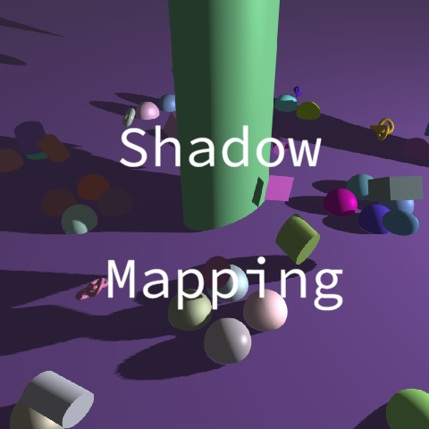

3D Graphics

This project focuses on implementing shadow mapping in a real-time 3D graphics demo. The goal was to render shadows from a perspective light source by first recording scene depth into a shadow map and then using that depth information during the main rendering pass. The demo also includes fog, lighting, shadow map visualization, and light frustum debugging tools to better understand how shadow mapping works in a graphics pipeline.
This project helped me understand how multiple rendering passes work together. The most challenging part was connecting the camera matrices, framebuffer, and shader logic correctly. Through this assignment, I learned how shadow maps are created and used in real-time rendering.